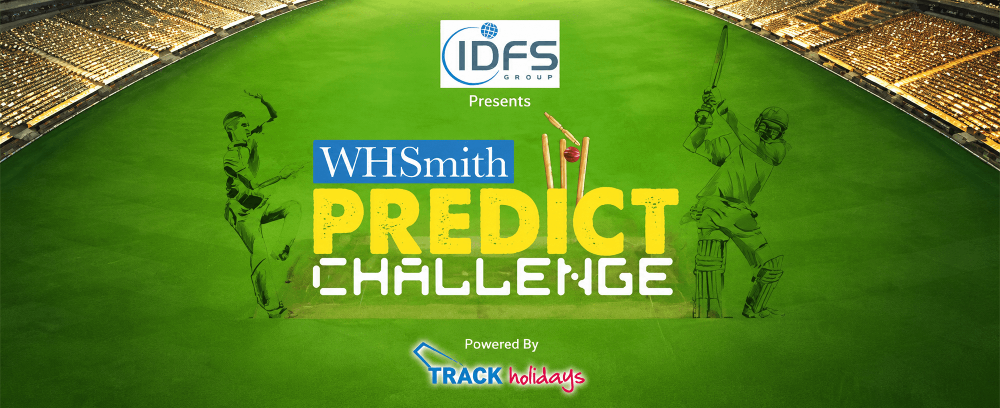
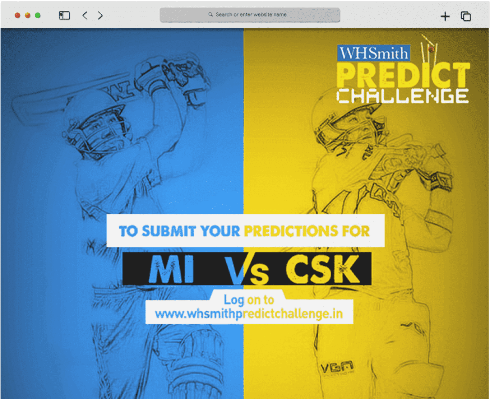
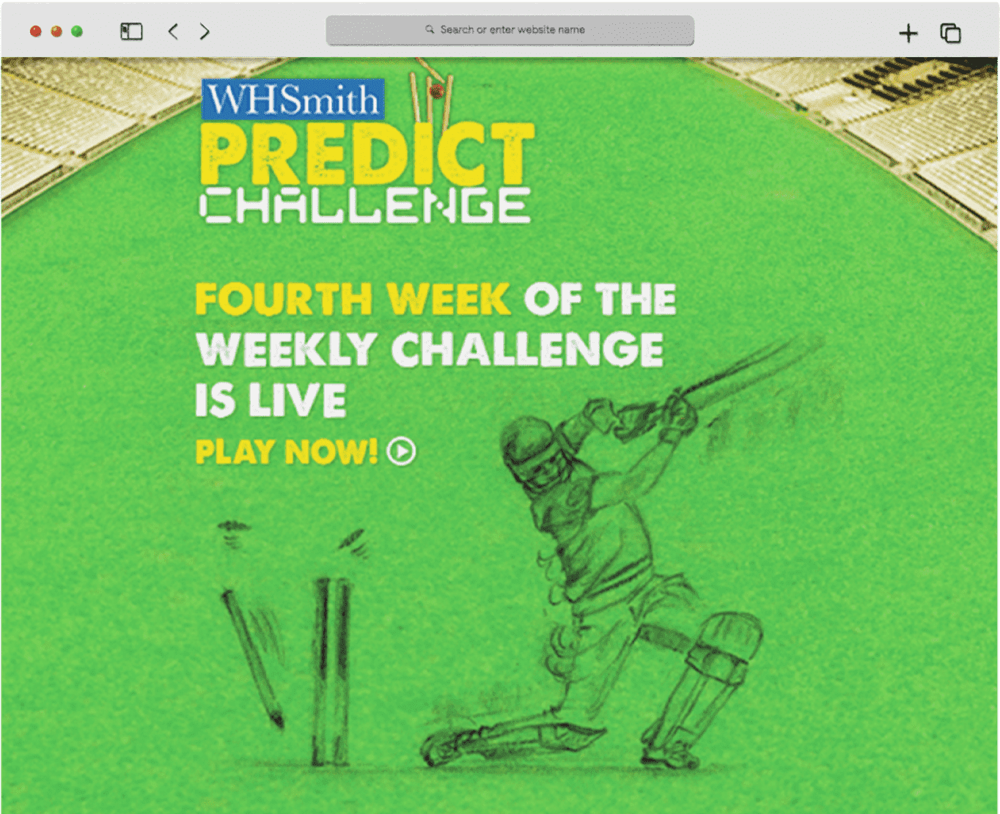
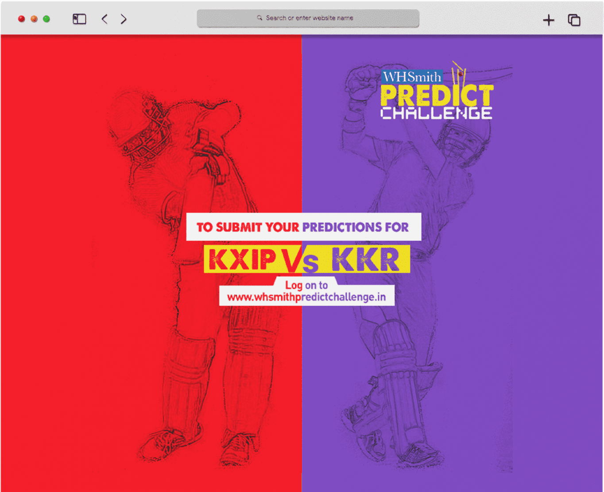
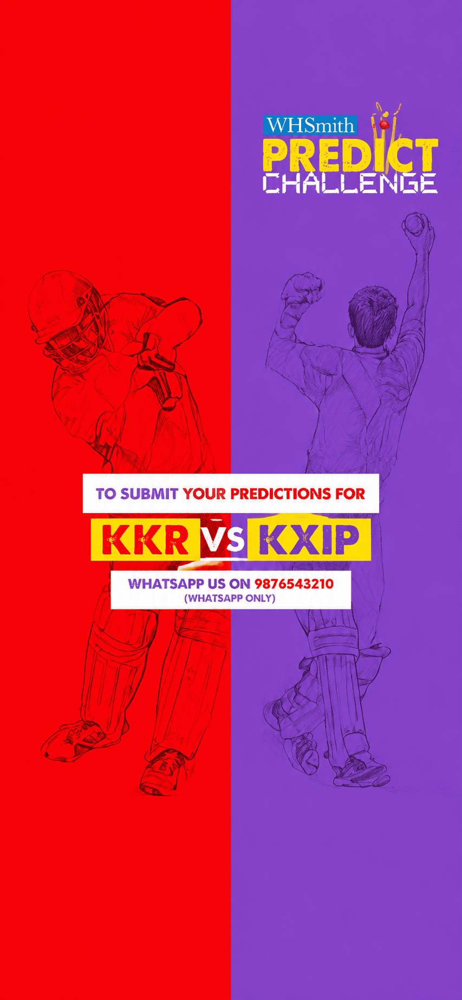

WHSmith’s niche positioning needed a culturally immediate entry point for an Indian employee audience.
← Back to workMake every match
WHSmith · IPL Engagement Application
Make every match
mean more.
A prediction-led employee challenge built to turn the energy of IPL 2015 into repeated participation and stronger brand awareness.

Project overview
From match-day interest
to daily participation.
WHSmith needed a more relevant way to build recognition inside a diverse, fast-moving employee network.
We created a customised IPL prediction application supported by announcements, prize communication, weekly prompts, winner posts and a live leaderboard.
- Campaign
- IPL 2015
- Content
- Match + Weekly Challenges
- Engagement
- Prizes + Leaderboard
- Delivery
- Desktop + Mobile
The organising idea
Attention+Prediction+Reward
Turn spectators
into players.
The challenge
Enter a different market.
Earn active attention.
The experience had to create reasons to return throughout the tournament, not only on launch day.
The engagement system
One tournament.
Four participation loops.

01
Predict
Match-led prompts make entry immediate and intuitive.

02
Return
Weekly challenges create a dependable participation rhythm.

03
Compete
Daily and weekly standings make progress visible.

04
Celebrate
Winner and prize posts keep recognition circulating.
Built for participation
The challenge
in every pocket.
Mobile-first communication brought match prompts directly into the flow of the workday, making participation quick enough to repeat and visible enough to share.

- 01AnnounceLaunch the challenge and the reward.
- 02PromptInvite predictions around each match.
- 03RankTrack daily and weekly leaders.
- 04RewardCelebrate winners to fuel the next round.
The outcome
A niche brand became
part of the match-day conversation.
The application joined prediction, competition and recognition in one repeatable engagement loop—giving WHSmith sustained visibility across the tournament.
Repeated engagement
Match and weekly prompts gave employees clear reasons to return.
Visible momentum
The leaderboard turned individual entries into a shared contest.
Stronger recall
Prizes and winner communication kept WHSmith present throughout IPL.
Predict the match.Build the momentum.
Building an engaging application?